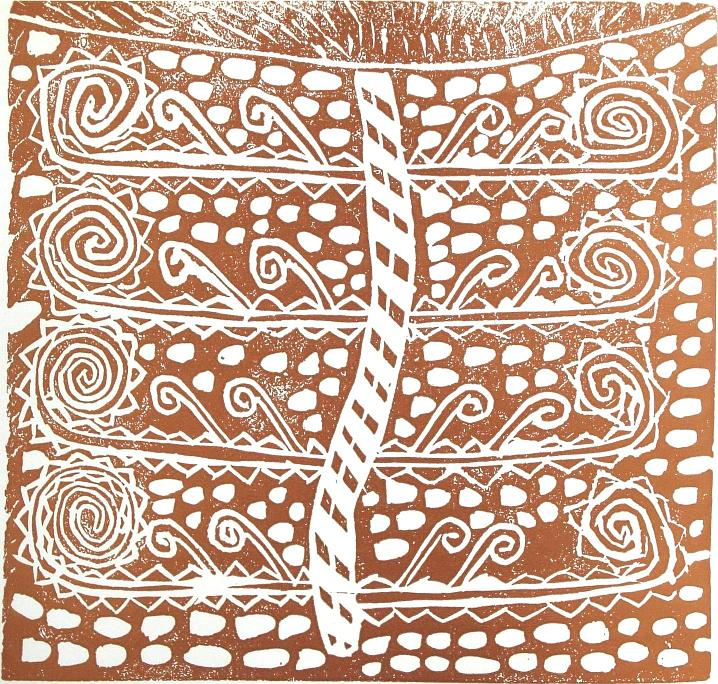

PUBLISHER’S NOTE
RATHER than being a reprint of earlier editions of In The Early World, this third edition is an attempt to go some way towards publishing the book that Elwyn Richardson might have produced in 1964 had modern communication and publishing technology been available. For someone with such a love of colour it was frustrating for Elwyn that only glimpses of the richness of the educational setting at Oruaiti and the beauty of the children’s artworks could be seen in the earlier editions.
This edition retains the original text without alteration. The original design by printmaker, potter, painter and designer Roy Cowan has been largely retained, with the addition of several new colour photographs and illustrations. In some places the original monochrome photograph or print has been substituted for a similar colour image where one has become available. Elsewhere new photographs or artworks have been added where it was felt the story would be enhanced and give readers a better feel for the Oruaiti school environment.
Sources used in the production of this third edition include colour slides taken at the time by Elwyn and copies of magazines produced by the children containing their stories, poems and art. Many photographs have been reproduced from negatives included with the original manuscript (entitled Oruaiti—A Country School) found in our archives. Some prints and drawings included in the manuscript which weren’t included in the first edition of the book have been reproduced in this edition.
We have also included an epilogue briefly covering events since the publication of the first edition in 1964. The epilogue has been contributed by Dr Margaret MacDonald, whose doctoral thesis, Elwyn Richardson and the Early World of Art Education in New Zealand, won the 2011 Sutton-Smith Award from the New Zealand Association of Research in Education (NZARE).
The limited edition folio 40 Oruaiti Prints has also been reproduced for the first time, as an Appendix to this edition. This collection was made from wood and lino blocks cut by Oruaiti children and printed by Elwyn Richardson and Peter Smith at Epsom Teachers’ College in 1961. The 50 copies of the folio were donated to various institutions or gifted to friends and others interested in the Oruaiti project, but because of their fragile nature and scarcity few have been publicly available.
Many thanks to Elwyn and his wife Helen for their support, generosity and hospitality, to Jim Allen for making his collection of school magazines and photographs available, and to Dr Margaret MacDonald for her support and sound advice. Thanks also to Dr Gwenneth Phillips for accepting Elwyn’s invitation to contribute a new Foreword to this third edition.
DAVID ELLIS
Publisher
The New Zealand Council for Educational Research
March 2012

Kina by Michael H.

Fern design, Raymond, 10 years